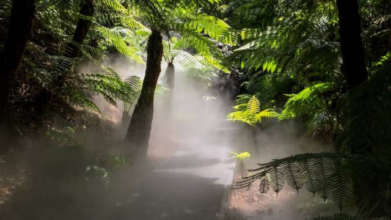
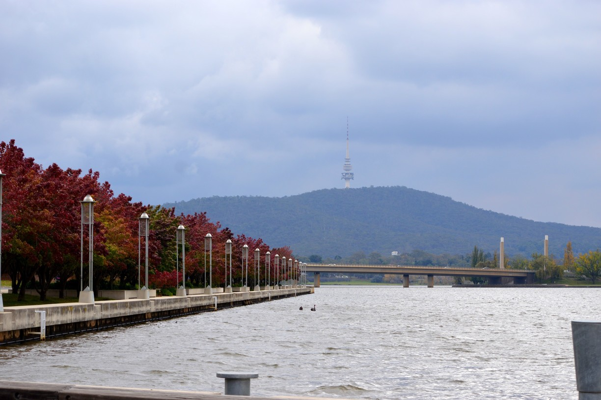
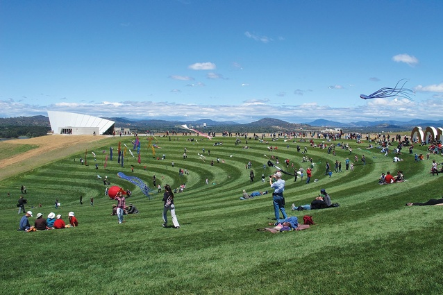

My suggestion on 5 place to visit in Canberra
Living in Canberra for 3 years now. I'm absolutely enjoy being here.
There are lot of place I have been and many of them spot on due to the beauty and the unique of the place.
Unlike most of other Australian, They are visit Canberra through mid Winter. It is always cold and often the sun weren't shown up. It's make people don't like to visit Canberra.
Canberra is very peaceful and quite place but can also be very crowned in special event like: Fireworks in Griffin lake, Multi culture festival,etc.Not just in special event,there are a ton of place that is attractive to many tourist and Australian to visit when they have free-time in the right weather condition.
So,What are my suggestion on 5 place in Canberra?
1)Mount Ainslie
First, Mount Ainslie is locate near Australia War Memorial. It can be a very fun experiment after the whole year of hard working. It's fell nice during autumn and Summer. The weather is warm, this could attract many animal like: Rabbit, Kangaroo even snake to hang around near the sun. It is create a very wildness environment for the trip. Enjoy the beauty of nature and also exercise yourself.
Mount Ainslie is also a perfect place for camping or for a picnic at the lookout and also on the side of the trail. It is also special because of the lookout locate on the mountain. There are two ways to get to the lookout: Walk along a trail or take the turn near Australia War Memorial and ride to the top with vehicle. Ainslie lookout had a historical in the create of Griffin lake. On the lookout, you can see Australia War Memorial below your feet and see the parliament house and griffin lake line in the straight line.According to an article written in 1922, Mount Ainslie lookout 'will afford an ever changing bird's eye and panoramic picture of the city's buildings and beauty spots, as well as of the lovely plains that run to join the Yass Plains on the north. They are also many picnic table, fountain of water and food truck are there to service the tourist who would like to visit the lookout.
2)Australia National Botanic Garden.
Having many species of plant in native plants from all part of Australia. Australia National Botanic Garden can be fun and also educate people about difference type of plant even the plants threaten in the wild which lead them to extinction.The garden look beauty at day or night. Special at night,the garden is light up with many difference color make the garden look stunning. They are also create fake mist use water. The first time I went to the garden, It is a dinosaur festival. And it is one of my bets experiment in Australia.

3)Lake Burley Griffin
A man make lake place near the center of Canberra.It was create to the development of the capital itself and It have many argument of the idea to make the lake until Sir Robert Menzies remained a steadfast support of the made of the Griffin lake and begin to constructed the lake in 1959. Now, his statue is standing in the side road near the lake. Lake Burley Griffin is one of the main place mainly special event happen like: Fire work, Balloon festival,etc. It is also the place for outside activity for family. You can spent quality time with your family by ride boat over the river and even have a picnic near the lake.

4)National Arboretum Canberra
See the forest for the trees at the National Arboretum Canberra, with its 94 forests of rare, endangered and symbolic trees from Australia and around the world. Walk, drive, cycle or even horse-ride around the 250 hectare site. You’ll be struck by the range of botanical beauty, including the living artworks in the National Bonsai and Penjing Collection.It is use in many difference event like: Wedding, Children's birthday party and tree plant.

5)National Gallery of Australia
Lastly, On the shores of Lake Burley Griffin, the National Gallery of Australia contains Australia's largest collection of art.It have all the collection of extensive collection from many place around the world, include Australia.